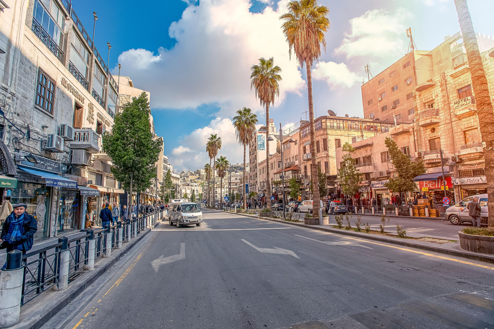
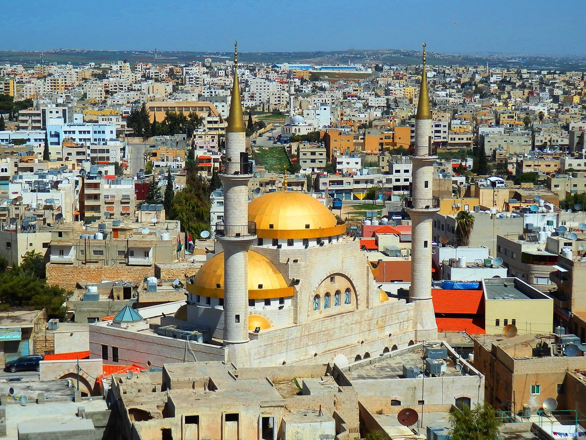
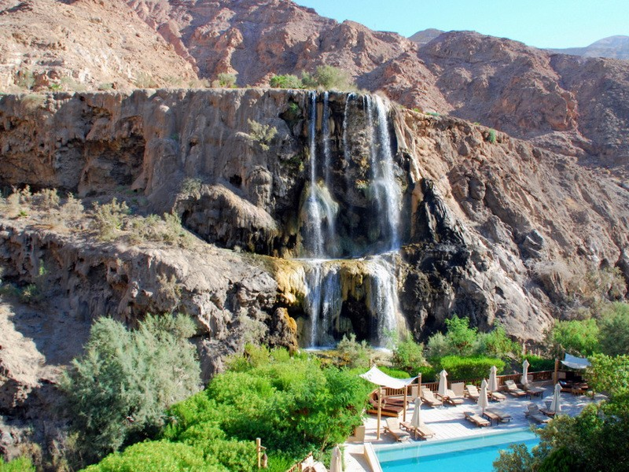
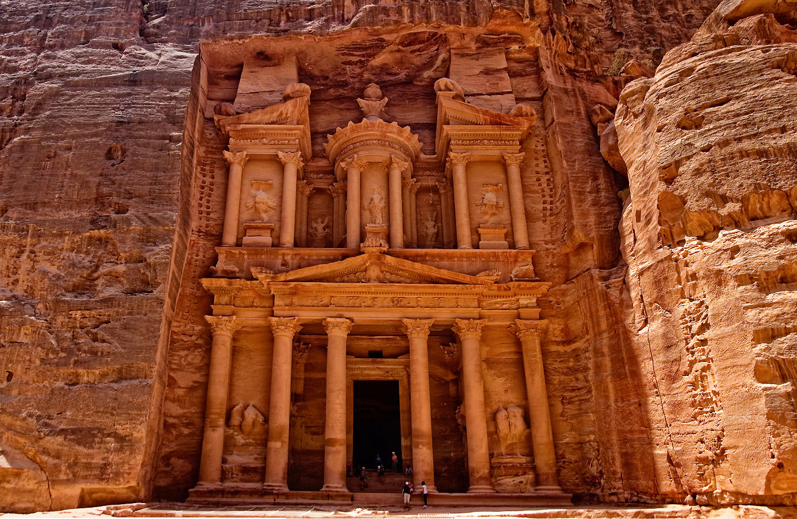
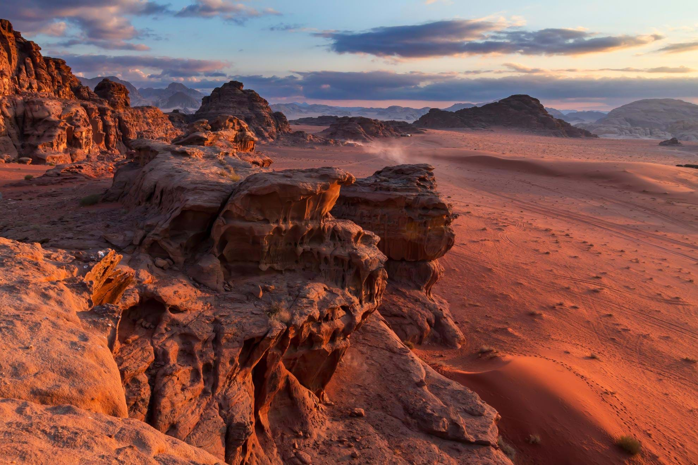
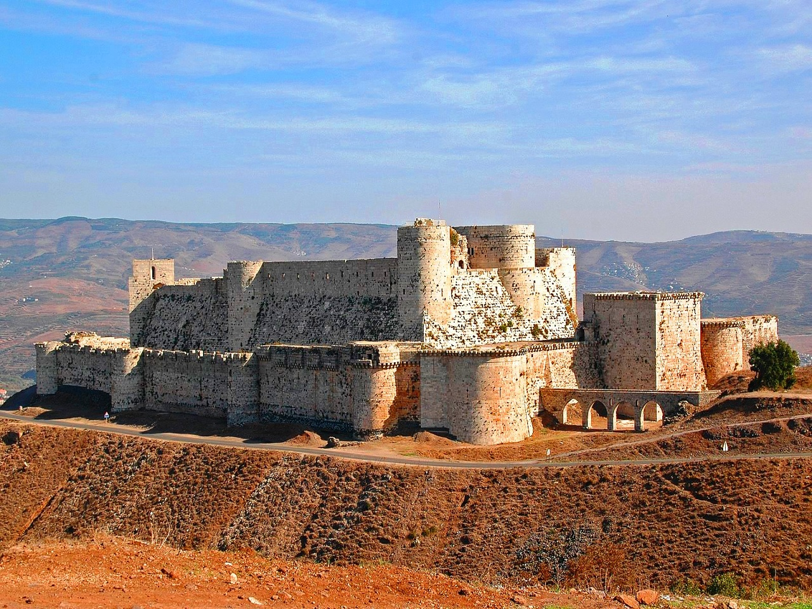
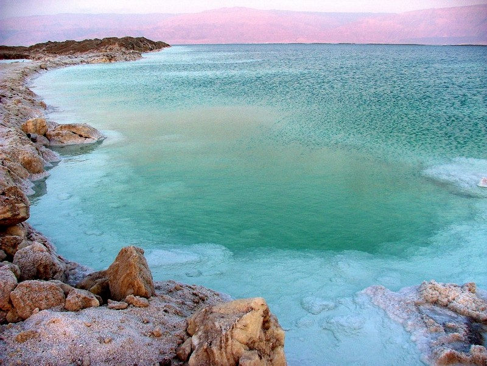

Прилет в столицу Иордании - Амман в 02:45,
трансфер в отель в Аммане, поселение.
Рекомендуем Вам принять душ, отдохнуть и утром отправиться
на завтрак, чтобы уже сегодня начать изучать невероятную
и такую не похожую на что-либо другое Иорданию.
Мы посетим Цитадель Аммана с высоты которой открывается изумительный вид
на старую историческую часть города.
После переезд на север Иордании, посещение замка Аджлун (12й век, построен
династией Аюбидов во время крестовых походов для защиты мусульманских...
Весна в Иордании
03/03/2022 - 10/03/2022
(8 дней)
Особенности маршрута
1 день: Прилет в Амман. Амман. Замок Аджлун, Дом каллиграфии. Джераш

2 день: Мадаба. Гора Небо. Аль-Сальт. Ночлег на Мертвом море
Завтрак в отеле в Аммане. Выезд в город Мадаба.
Поездка в христианский город Мадаба "город мозаик", посещение монастыря Святого Георгия. Поездка на Гору Небо, где по преданию, Моисей увидел землю обетованную, предполагаемое место смерти и захоронения Пророка Моисея. В ходе раскопок, была открыта базилика храма, а также здания многочисленных служб.
С площадки перед храмом открывается величественный вид на всю долину реки Иордан и Мертвое море, за которым в тумане угадываются крыши Вифлеема и...

Поездка в христианский город Мадаба "город мозаик", посещение монастыря Святого Георгия. Поездка на Гору Небо, где по преданию, Моисей увидел землю обетованную, предполагаемое место смерти и захоронения Пророка Моисея. В ходе раскопок, была открыта базилика храма, а также здания многочисленных служб.
С площадки перед храмом открывается величественный вид на всю долину реки Иордан и Мертвое море, за которым в тумане угадываются крыши Вифлеема и...
3 день: Маин - термальные источники. Ночлег на Мертвом море

Завтрак в отеле на Мертвом море.
Переезд в Маин - к минеральным источникам где еще во времена Древнего Рима люди приезжали, чтобы подлечиться в термальных водах или просто понежиться в горячей воде. Термальные источники находятся в одном из самых захватывающих пустынных оазисов в мире. Маин насчитывает более 65 горячих и холодных подземных источников с разными типами целебной воды.
Поселение в отель на Мертвом море. Здесь Вы можете насладиться плаванием в терапевтической соленой воде Мертвого...
Переезд в Маин - к минеральным источникам где еще во времена Древнего Рима люди приезжали, чтобы подлечиться в термальных водах или просто понежиться в горячей воде. Термальные источники находятся в одном из самых захватывающих пустынных оазисов в мире. Маин насчитывает более 65 горячих и холодных подземных источников с разными типами целебной воды.
Поселение в отель на Мертвом море. Здесь Вы можете насладиться плаванием в терапевтической соленой воде Мертвого...
4 день: Бетани (Вефания). Река Иордан. Пещера Лота. Дхана. Ночь в Петре.
Завтрак в отеле на Мертвом море. Выселение.
Сегодня мы отправляемся в Бетани. В Библии это место называется "Вифания за Иорданом, где Иоанн был крещен". Местные верования на протяжении тысяч лет обозначают это место, как холм, с которого Илья вознесся на небо. Место крещения Иисуса Христа, которое для паломников и верующих людей имеет огромное духовное значение. Поездка на реку Иордан в живописную рифтовую долину реки Иордан – одно из самых удивительных и прекрасных мест в мире, куда по библейскому...
Сегодня мы отправляемся в Бетани. В Библии это место называется "Вифания за Иорданом, где Иоанн был крещен". Местные верования на протяжении тысяч лет обозначают это место, как холм, с которого Илья вознесся на небо. Место крещения Иисуса Христа, которое для паломников и верующих людей имеет огромное духовное значение. Поездка на реку Иордан в живописную рифтовую долину реки Иордан – одно из самых удивительных и прекрасных мест в мире, куда по библейскому...

5 день: Петра. Ночная Петра (по желанию). Ночлег в отеле в Петре

Завтрак в отеле в Петре.
Этот день мы посвятим городу-легенде – Петре! Древнейший город, высеченный набатейцами в гигантском скальном массиве, имеет более чем двухтысячелетнюю историю. Это по-настоящему волшебное место: в разное время суток каменные стены и своды могут приобрести любой оттенок от светло-розового до черно-бордового. В дворце Эль Хазне стоит осмотреть сокровищницу. Кроме того, здесь просто неисчислимое количество храмов, царских усыпальниц и древних памятников культуры. Вы сможете...
Этот день мы посвятим городу-легенде – Петре! Древнейший город, высеченный набатейцами в гигантском скальном массиве, имеет более чем двухтысячелетнюю историю. Это по-настоящему волшебное место: в разное время суток каменные стены и своды могут приобрести любой оттенок от светло-розового до черно-бордового. В дворце Эль Хазне стоит осмотреть сокровищницу. Кроме того, здесь просто неисчислимое количество храмов, царских усыпальниц и древних памятников культуры. Вы сможете...
6 день: Вади Рам. Джип-тур. Традиционный фольклорный вечер в пустыне. Ночлег в пустыне Вади Рам.
Завтрак в отеле в Петре. Выселение из отеля.
Переезд в Пустыню Вади Рам. Вади Рам одна из красивейших пустынь мира, Лунная Долина, так многие ее называют. Здесь под освещением ночного неба, ландшафты напоминают поверхность луны. Взор поражает удивительное сочетание скал в песках пустыни и своеобразная природа. Вади Рам является естественным продолжением Аравийской Пустыни. Сейчас, это природный заповедник, а когда то через неё проходили караваны загадочного набатейского народа. Сегодня Вади...

Переезд в Пустыню Вади Рам. Вади Рам одна из красивейших пустынь мира, Лунная Долина, так многие ее называют. Здесь под освещением ночного неба, ландшафты напоминают поверхность луны. Взор поражает удивительное сочетание скал в песках пустыни и своеобразная природа. Вади Рам является естественным продолжением Аравийской Пустыни. Сейчас, это природный заповедник, а когда то через неё проходили караваны загадочного набатейского народа. Сегодня Вади...
7 день: Замок Карак. Ночлег на Мертвом море

Завтрак в отеле в пустыне. Выселение.
После завтрака мы отправимся на на юг к древнему замку крестоносцев Керак и исследуем лабиринт залов и коридоров с каменными сводами. Керак был столицей Моава, и его замок возвышается над горизонтом. Замок крестоносцев дает впечатляющее представление об архитектурных и военных навыках крестоносцев. Переезд на Мертвое море.
Ночлег в отеле на Мертвом море....
После завтрака мы отправимся на на юг к древнему замку крестоносцев Керак и исследуем лабиринт залов и коридоров с каменными сводами. Керак был столицей Моава, и его замок возвышается над горизонтом. Замок крестоносцев дает впечатляющее представление об архитектурных и военных навыках крестоносцев. Переезд на Мертвое море.
Ночлег в отеле на Мертвом море....
8 день: Завтрак в отеле на Мертвом море. Выселение.
Сегодня мы прощаемся с Иорданией.
Нас ожидаем трансфер в а/п Аммана. Вылет в Киев. Рекомендуем перелет турецкими авиалиниями.
TK813 - AMM Амман «Королева Алия» 06:10 - IST Стамбул 09:35;
TK1255 - IST Стамбул 12:45 - KBP Борисполь (Киев) 13:45.

Нас ожидаем трансфер в а/п Аммана. Вылет в Киев. Рекомендуем перелет турецкими авиалиниями.
TK813 - AMM Амман «Королева Алия» 06:10 - IST Стамбул 09:35;
TK1255 - IST Стамбул 12:45 - KBP Борисполь (Киев) 13:45.
Турлидер